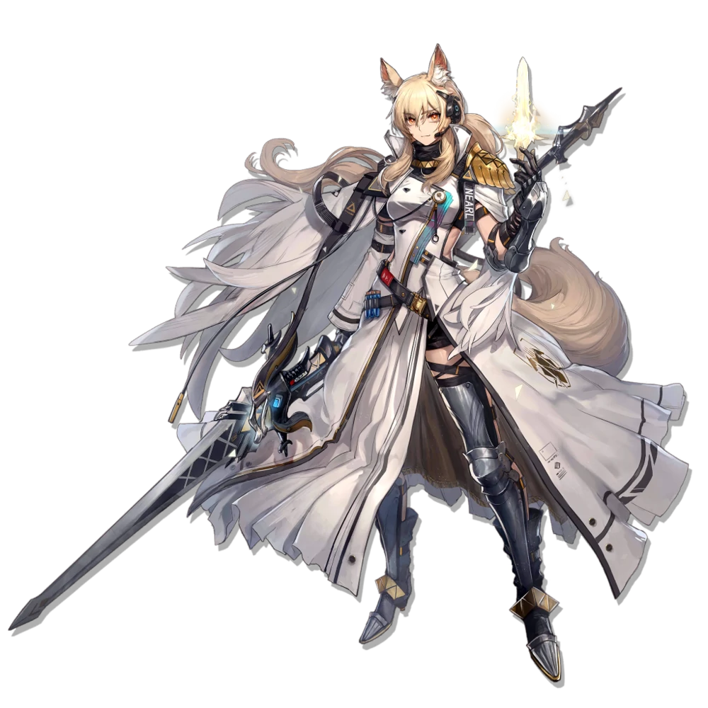
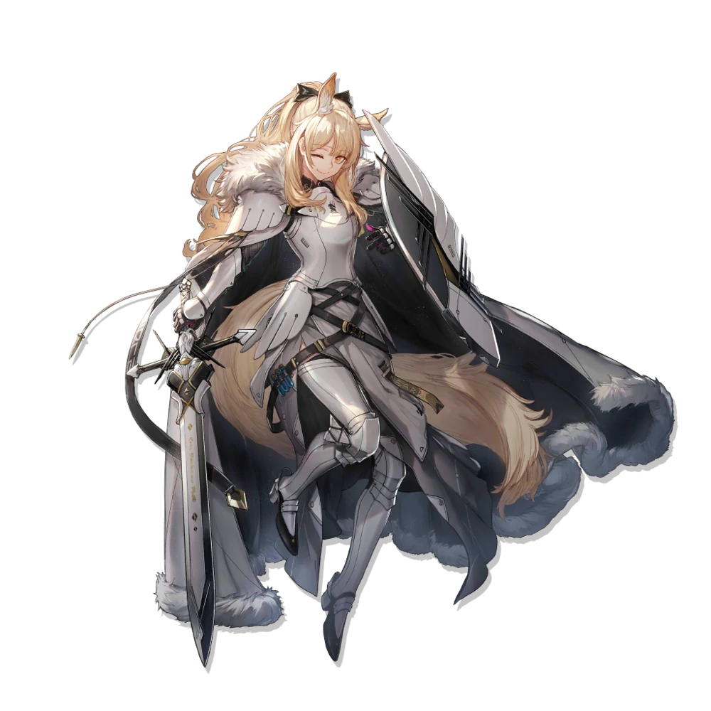
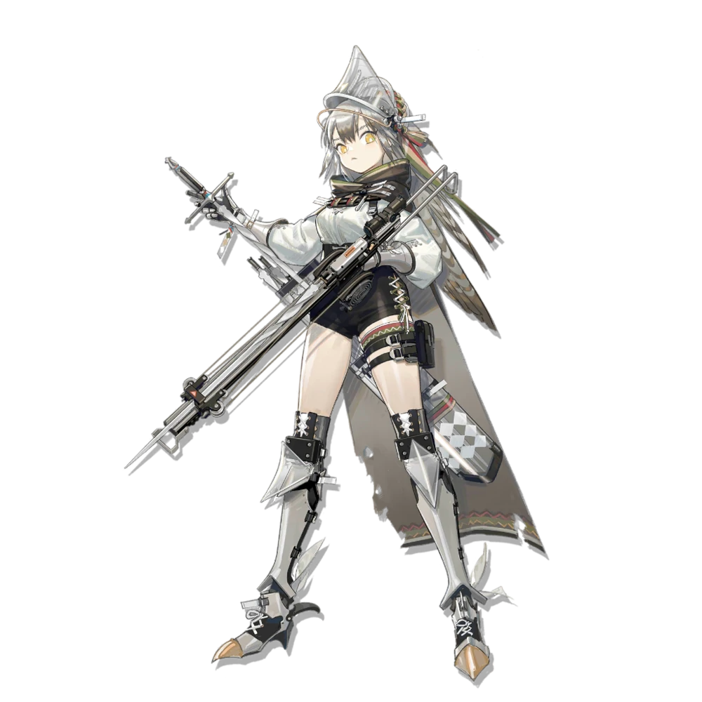
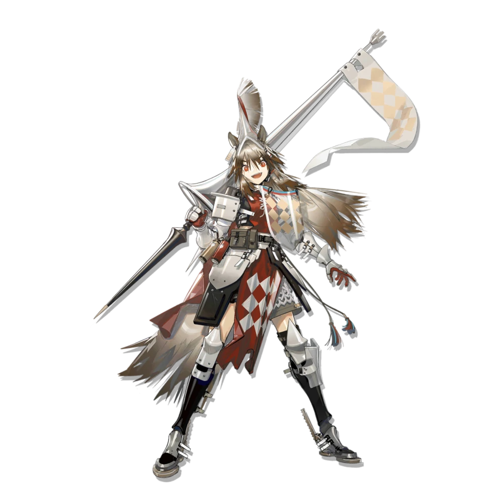
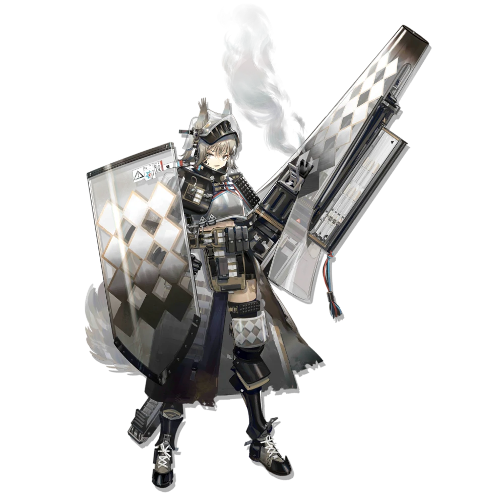

| 1 |
 |
Margaret Nearl |
Nearl the Radiant Knight |
Margaret Nearl, titled the "Radiant Knight," is not only the granddaughter of Kazimierz's national hero Kirill Nearl hailing from the Elderly Pegasian lineage, but also she is previously the Knight Primus of the Nearls. Being a vocal opposition towards the rampant commercialization in the Kazimierz Major, she deserted the Adeptus at the age of sixteen and became a prominent MVP of the Major in order to change the country from within. However, Margaret's fame eventually threatened the interest of the Major's stakeholders, specifically the General Chamber of Commerce. In order to protect her, six years ago (the year 1091), Kirill falsely announced to the public that she is an "Infected" even though she has never contacted Oripathy and then had her exiled while leaving her position and family behind. To some, her exile is an unfair one; many do not believe such drastic news but instead suspect that she has become more of a political victim. Nevertheless, Margaret obeyed while being unaware of her condition and has been treating her exile as a training for herself. |
| 2 |
 |
Maria Nearl |
Blemishine |
Maria Nearl, a young knight from Kazimierz and younger sister to Operator Nearl, has experience with knight sports and has demonstrated excellence in combat across a variety of tests. She now serves as a Defender Operator alongside Operator Nearl, as per her wishes. |
| 3 |
 |
Justyna Valentine |
Fartooth |
"Fartooth" Knight Justyna, garnered initial fame at the Major, presently affiliated with the Infected knight-founded Pinus Sylvestris Knightclub. An Infected knight with some degree of fame in Kazimierz. Following a string of crises in the recent Major, Pinus Sylvestris and Rhodes Island emerged with a cooperative relationship, in which Fartooth Knight came to Rhodes Island as a collaborator, to receive Oripathy treatment, and provide Rhodes Island with combat support. |
| 4 |
 |
Iwona Krukowska |
Wild Mane |
"Wild Mane" Knight Iwona, member of Pinus Sylvestris Knightclub. Joined Rhodes Island after undertaking the Kazimierz Major and a string of disturbances. Besides undergoing essential treatment for Oripathy, Wild Mane is also happy to provide Rhodes Island with support in combat. She's willing to do a considerable amount for the Infected. |
| 5 |
 |
Greynuty Kaliska |
Ashlock |
Greynuty Kaliska the "Ashlock Knight" was originally the daughter of a Kazimierzian nobility. However, after she contracted Oripathy, her family members not only blamed her for the Kaliskas' downfall, but also unanimously voted for her banishment, including her dear parents. This caused her to hate the corrupt aristrocrats until she met Sona the "Flametail Knight" in an underground tournament who also harbors the same feeling. |